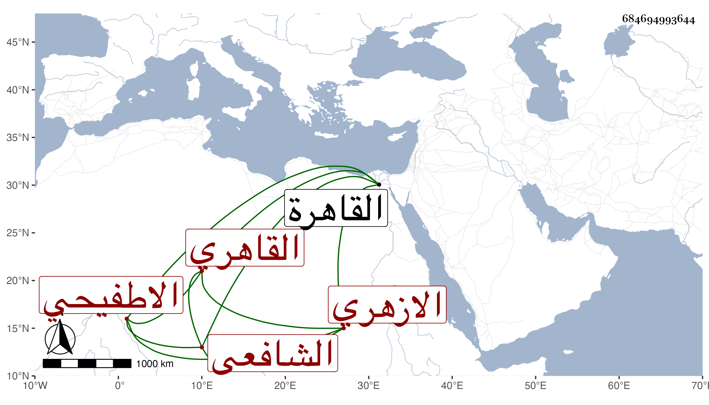

0902Sakhawi.DawLamic.ITO20230111-ara1.EIS1600.684694993644
Biography ID: 684694993644
446
عبد الرحيم بن أحمد بن يعقوب بن أحمد بن عبد المنعم بن أحمد الزين أبو الفضل بن الشهاب بن الشرف الاطفيحي الازهري القاهري الشافعي شقيق المحب محمد وعبد القادر الآتيين وأسباط الزين العراقي أمهم زينب ويعرف كأبيه بابن يعقوب . ولد في ذي الحجة سنة تسع وعشرين وثمانمائة بالقاهرة ونشأ بها في كنف أبويه في غاية ما يكون من الرفاهية والنعمة فحفظ القرآن وتنقيح اللباب لخاله وعرضه على جماعة وسمع على شيخنا وغيره بل كتب عن شيخنا في أماليه ورأيت له حضورا على الزين القمني من لفظ الكلوتاتي وباشر النقابة وجهات الحرمين وغير ذلك عند الشرف المناوي واختص به ولازم خدمته واتحد مع ولده زين العابدين الآتي ولم يكن بينهما في المولد وكذا الوفاة إلا دون شهر وحج غير مرة وكان شكلا ظريفا ذكيا بسامة متوددا حسن العشرة متصونا بالنسبة لتهتك أخيه وهو إلى أبيه أقرب من أخويه في الشبه وبعض الخصال ، وقريحته سليمة وذهنه مستقيم وطبعه وزان ، وقد كتبت عنه قوله :
| همذاني الأصل واش | لا ترم فيه سعاده |
| انه شخص ثقيل | وهو هم وزياده |
وكتب عنه غير واحد غير ذلك قديما أثبت بعضه في المعجم . مات مطعونا في يوم الخميس ثالث عشري شوال سنة ثلاث وسبعين وصلى عليه من الغد ودفن عند جده لأمه وخاله الولي العراقي رحمه الله وعفا عنه .
